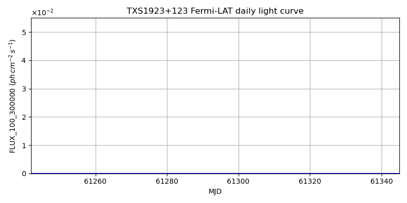
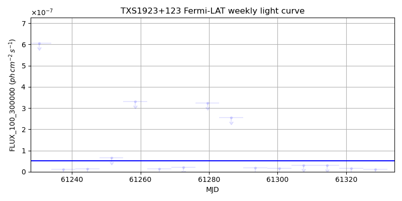
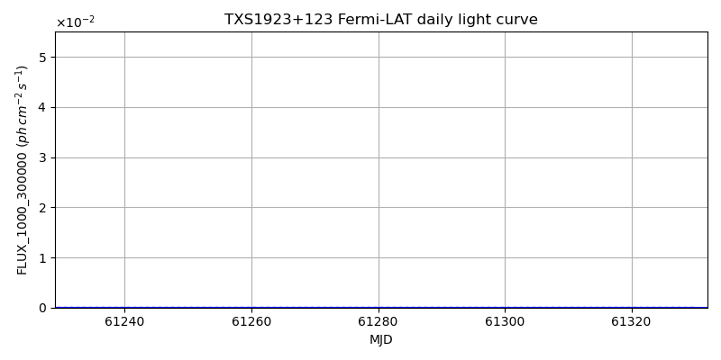
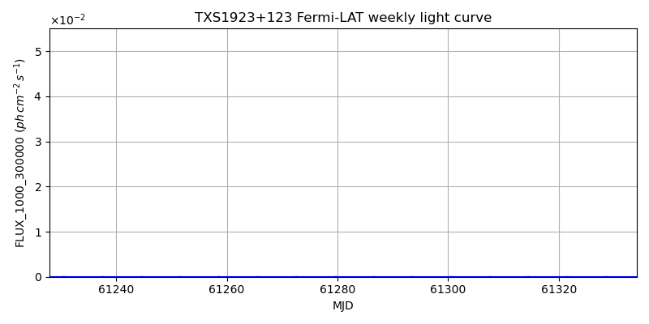

LAT Lightcurve site: https://fermi.gsfc.nasa.gov/ssc/data/access/lat/msl_lc/source/TXS_1923p123
NED: Query
Time of last update of this page: UT: 2026-10-30 15:25 (MJD: 61343.642)
| Property | Value |
|---|---|
| R.A. | 19:25:40.80 |
| Dec. | 12:27:39.6 |
| z | 0.000 |
| 3FGL SpectrumType | PowerLaw |
| 3FGL PL Index | 2.61 |
| 3FGL Flux_100_300000 | 5.09e-08 1 / (s cm2) |
| 3FGL Flux_1000_300000 | 1.26e-09 1 / (s cm2) |
| 3FGL Flux >200 GeV | 2.54e-13 1 / (s cm2) |
| 3FGL Extrap. Crab >200 GeV | 0.00 |
| 3FGL Flux After EBL Absorption >200GeV | 2.54e-13 1 / (s cm2) |
| 3FGL EBL Crab Fraction >200GeV | 0.00 |

| MJD | dMJD | Flux | dFlux | Frac3FGL | FracCrab>200GeV | EBLFracCrab>200GeV |
|---|---|---|---|---|---|---|
| 61338.50 | 0.50 | 1.01e-06 | 0.00e+00 | 0.00 | 0.00 | 0.00 |
| 61339.50 | 0.50 | 8.67e-07 | 0.00e+00 | 0.00 | 0.00 | 0.00 |
| 61340.50 | 0.50 | 1.19e-07 | 0.00e+00 | 0.00 | 0.00 | 0.00 |
| 61341.50 | 0.50 | 1.91e-06 | 0.00e+00 | 0.00 | 0.00 | 0.00 |
| 61342.50 | 0.50 | 6.43e-08 | 0.00e+00 | 0.00 | 0.00 | 0.00 |

| MJD | dMJD | Flux | dFlux | Frac3FGL | FracCrab>200GeV | EBLFracCrab>200GeV |
|---|---|---|---|---|---|---|
| 61307.50 | 3.50 | 3.07e-08 | 0.00e+00 | 0.00 | 0.00 | 0.00 |
| 61314.50 | 3.50 | 2.93e-08 | 0.00e+00 | 0.00 | 0.00 | 0.00 |
| 61321.50 | 3.50 | 1.70e-08 | 0.00e+00 | 0.00 | 0.00 | 0.00 |
| 61328.50 | 3.50 | 1.22e-08 | 0.00e+00 | 0.00 | 0.00 | 0.00 |
| 61335.50 | 3.50 | 2.34e-08 | 0.00e+00 | 0.00 | 0.00 | 0.00 |

| MJD | dMJD | Flux | dFlux | Frac3FGL | FracCrab>200GeV | EBLFracCrab>200GeV |
|---|---|---|---|---|---|---|
| 61338.50 | 0.50 | 3.80e-08 | 0.00e+00 | 0.00 | 0.00 | 0.00 |
| 61339.50 | 0.50 | 2.73e-08 | 0.00e+00 | 0.00 | 0.00 | 0.00 |
| 61340.50 | 0.50 | 2.49e-08 | 0.00e+00 | 0.00 | 0.00 | 0.00 |
| 61341.50 | 0.50 | 5.13e-08 | 0.00e+00 | 0.00 | 0.00 | 0.00 |
| 61342.50 | 0.50 | 2.08e-08 | 0.00e+00 | 0.00 | 0.00 | 0.00 |

| MJD | dMJD | Flux | dFlux | Frac3FGL | FracCrab>200GeV | EBLFracCrab>200GeV |
|---|---|---|---|---|---|---|
| 61307.50 | 3.50 | 4.39e-09 | 0.00e+00 | 0.00 | 0.00 | 0.00 |
| 61314.50 | 3.50 | 1.00e-08 | 0.00e+00 | 0.00 | 0.00 | 0.00 |
| 61321.50 | 3.50 | 5.21e-09 | 0.00e+00 | 0.00 | 0.00 | 0.00 |
| 61328.50 | 3.50 | 4.23e-09 | 0.00e+00 | 0.00 | 0.00 | 0.00 |
| 61335.50 | 3.50 | 7.34e-09 | 0.00e+00 | 0.00 | 0.00 | 0.00 |
--------------------------------------------------------- Using user-supplied coords: 19:25:40.80 12:27:39.6 2000 --------------------------------------------------------- FLWO UT night of: 2026-10-31 Local Sid. @ Midnight: 02:14 Sunset (-15.0) (local, UT): 18:44 01:44 Sunrise (-15.0) (local, UT): 05:31 12:31 Moonrise (local, UT): 21:49 04:49 Moonset (local, UT): Moon phase: 0.68 --------------------------------------------------------- AzTime LSID UT Obj_el Obj_az Mn_el Mn_az Sep. --------------------------------------------------------- 18:44 20:57 01:44 61.7 232.6 -27.0 28.6 141.8 19:14 21:27 02:14 56.3 242.3 -23.9 34.8 141.9 19:44 21:57 02:44 50.4 249.7 -20.2 40.4 142.0 20:14 22:27 03:14 44.3 255.7 -16.1 45.6 142.0 20:44 22:58 03:44 38.1 260.8 -11.6 50.4 142.1 21:14 23:28 04:14 31.7 265.3 -6.7 54.8 142.1 21:44 23:58 04:44 25.3 269.4 -0.9 58.8 142.2 22:14 00:28 05:14 18.9 273.3 3.8 62.5 142.2 22:44 00:58 05:44 12.6 277.1 9.2 66.0 142.3 23:14 01:28 06:14 6.3 280.9 14.8 69.3 142.3 23:44 01:58 06:44 0.4 284.8 20.6 72.5 142.3 00:14 02:28 07:14 -6.0 288.8 26.5 75.5 142.3 00:44 02:58 07:44 -12.1 293.1 32.5 78.6 142.4 01:14 03:28 08:14 -17.9 297.8 38.5 81.7 142.4 01:44 03:58 08:44 -23.4 303.0 44.7 84.9 142.4 02:14 04:28 09:14 -28.6 308.8 50.8 88.3 142.5 02:44 04:59 09:44 -33.4 315.3 57.0 92.2 142.5 03:14 05:29 10:14 -37.6 322.7 63.2 97.0 142.5 03:44 05:59 10:44 -41.1 331.1 69.3 103.5 142.6 04:14 06:29 11:14 -43.7 340.4 75.2 113.7 142.6 04:44 06:59 11:44 -45.3 350.4 80.4 133.8 142.7 05:14 07:29 12:14 -45.8 0.9 83.0 177.6 142.7 05:31 07:46 12:31 -45.6 6.9 82.2 206.9 142.8 --------------------------------------------------------- Dark hours >55 deg.: 0.61 srcstart (UT): 2026-10-31 01:44 srcend (UT): 2026-10-31 02:20